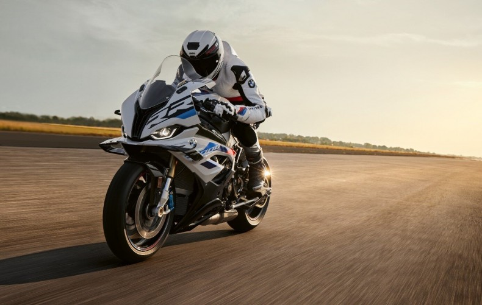

Historie BMW Motorrad
BMW vyrobilo první motocykl R 32 v roce 1923, který byl představen na Pařížském autosalonu. Charakteristickým znakem byl boxer motor s válci směřujícími do stran a kardanový hřídel místo řetězu. Tyto konstrukční prvky se staly ikonou značky a boxer motor s kardanem BMW používá dodnes.
Během druhé světové války BMW vyrábělo motocykly pro německou armádu — model R75 byl určen pro terénní použití a byl vybaven pohonem postranního vozíku. Po válce se firma musela znovu budovat a v 50. letech přišla s ikonickým modelem R69, který byl oblíbený pro svou spolehlivost a výkon.
Přelomovým momentem bylo uvedení modelu R80 G/S v roce 1980. Tento stroj definoval zcela nový segment — adventure touring. R80 G/S dokázal zvítězit v Dakar Rally a ukázal, že těžký silniční motocykl může zvládnout i náročný terén. Tento model je přímým předchůdcem dnešního R 1300 GS.
Dnes BMW Motorrad nabízí přes 30 modelů v různých segmentech — od supersportů přes naked bikes až po elektrické skútry. GS série je nejprodávanější adventure motorkou světa a symbolem prémiové kvality. BMW také aktivně rozvíjí elektrické technologie s modelem CE 04.
Novinky 2025
BMW představilo R 1300 GS s novým výkonnějším boxerem o výkonu 145 koní a systémem ASA (Automatic Shift Assistant) — prvním automatickou spojkou v historii GS. Nový podvozek a elektronická platforma posouvají GS na novou úroveň.
M 1000 RR získala nové aerodynamické winglet prvky pro lepší přítlak a stability při vysokých rychlostech. CE 04 pokračuje jako vlajková loď elektrické nabídky a BMW oznámilo plány na další elektrické modely do roku 2027.